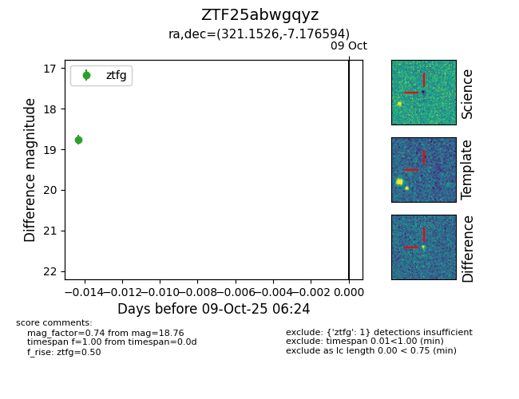

FINK: ZTF25abwgqyz
Lasair: ZTF25abwgqyz
ALeRCE: ZTF25abwgqyz
ZTF25abwgqyz (ztf,fink)
equatorial (ra, dec) = (321.1526,-7.17659)
galactic (l, b) = (45.1886,-37.16818)

last ztfg=18.76
1 ztfg detections